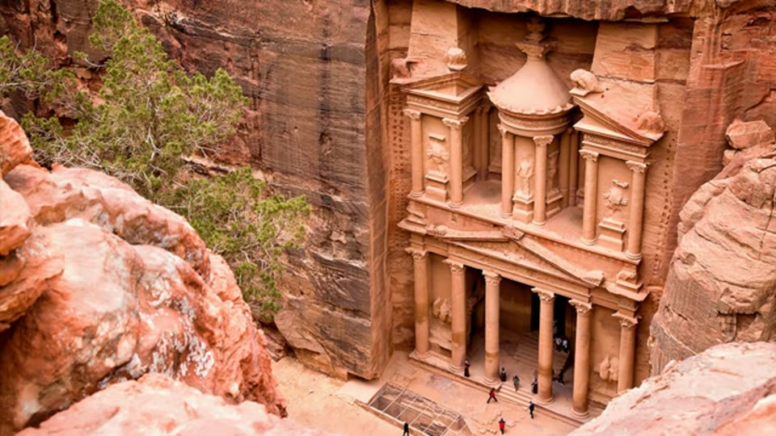
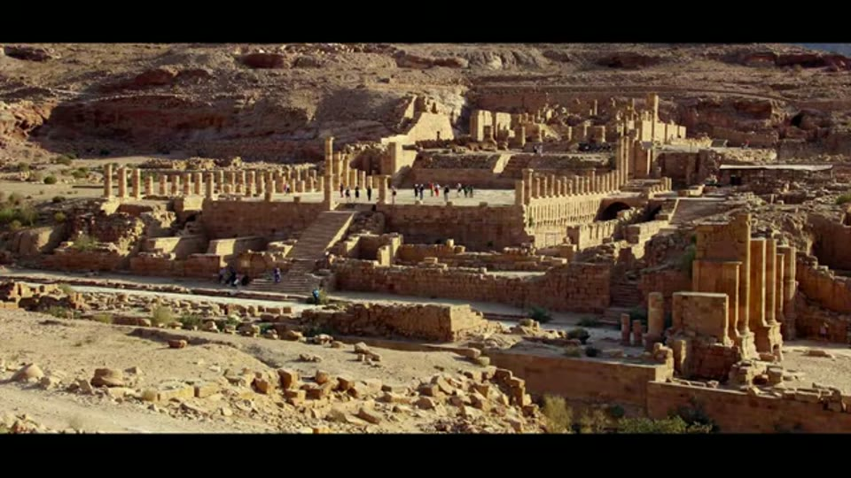

Curious Being
Secret Buried Underneath Ancient Site Petra's Treasury
Tina · 18 min · watch on YouTube · summarised 2026-09-28
The Treasury stands at the end of the Siq and appears to sit at ground level — you walk straight up to it 00:51–00:57. She argues that is an artefact of burial, and that an entire level lies underneath.
The reason Petra is buried is flood sediment 01:57–02:46. The city had a sophisticated water system — rock-cut channels, dams, cisterns, conduits — that both supplied water and diverted flash floods away from the rock-cut city. While it worked, there would have been little or no flood deposit. The metres of sediment that now bury much of the site are therefore a record of the system not working. She cites Al-Muheisen, excavating at Petra since 1979, for the figure that only 15% of the site has been dug.

Sediment has risen far enough to bury the entrances of caves along the outer Siq.
That gives her the proposal the video is built on 04:00–04:14: the water system would have been planned and cut at the same time as the great caves, so dating the failure of the water system dates the city.
What is under the forecourt
The low walls in front of the Treasury that visitors sit on enclose an open area covered with a grating 04:17–04:34. Looking down through it, about 5 m east of the Treasury's staircase, are two lower caves — with triangular pediments and column capitals in the standard Petra style. They are not small: the right-hand one is 5.4 m high and the left over 6 m / 20 ft, a two-storey building each 05:00–05:15.

There is an excavated void in front of the Treasury, under a grating visitors walk past.
Their existence was known from a ground-penetrating radar report, and they were excavated in 2003 by Jordanian archaeologists during the collapse in tourism caused by the Iraq war 05:15–05:35. She notes how little coverage the excavation received.
The plan she shows accounts for more than the two that are visible 05:46–06:15. Counting the caves under the Treasury's platform and one lower down on the protruding cliff beside it, five rock-cut caves were found in the 2003 season. All of them held thick flood sediment despite having had their doors blocked off in antiquity. Human bones and Nabataean pottery sherds came out of the sediment layers.

Five rock-cut caves were recorded along and under the Treasury's platform.
The plan is an official drawing, not a sketch: its title block reads Department of Antiquities / Petra Archaeological Park / Treasury Courtyard Excavation 2003 / Area (1) / Top Plan, with a north arrow, a 0–5 m scale bar and a draughtsman's name.
The limestone argument
This is the part of the video that does real work, and it is an argument about what a date is attached to.
The oldest of the five caves is dated by archaeologists to the 1st century BC, on the style of pottery recovered from a hearth lined with limestone and sandstone blocks in front of it 06:29–06:49. The same excavation found an ancient courtyard paved with limestone blocks, sitting higher than the cave entrances and on top of another layer of flood sediment — so the caves were there before the courtyard 06:57–07:17.
Her point is about the limestone 07:26–08:43. Petra is the rose city because it is red, iron-rich sandstone; limestone is not native to the region and is said to have been imported by the Romans, which she accepts as plausible. Petra's facades and caves are all cut in the native sandstone — the builders chose the harder local stone over bringing in limestone. But the block-and-column buildings down in the valley, the Great Temple among them, are Roman in style, built decades after the Nabataean kingdom became a Roman client state in the 1st century BC, and they use limestone pavers, stairs and column capitals.
So limestone at Petra reads as a Roman-period marker. And both the things the 1st-century-BC date rests on — the paved courtyard and the hearth the pottery came from — are limestone features sitting above the caves 08:43–09:10. On her reading the date dates the Roman layer, not the rock-cut caves beneath it, and older sediment layers below were never reached.


A paved courtyard sits above the cave entrances, and the paving is in a stone that is not Petra's.
The depths
From the official 2005 published report 09:20–10:11:
| Roman courtyard down to the lower cave floor | about 2.5 m |
| Current Siq level down to the Roman courtyard | over 6 m |
| Original plaza floor, on her reading | at least 8 m / 26 ft below today's level |

How far the original forecourt level sits below the one visitors walk on.
One detail she reads as diagnostic: the steps down to cave 62E are sandstone blocks and mud mortar, which is not the standard of construction anywhere else at Petra. She takes that as a later addition — put in once sediment had already buried the lower part of the cave, to keep it reachable.

The stair down to a lower cave is a later addition, built once sediment had buried it.
The consequence 10:11–10:56: when the Romans arrived about 2,000 years ago there was already about 2.5 m of sediment in the Treasury's forecourt, covering the bottoms of the lower caves. Rather than dig it all out — it was hard and compact — they cleared the paths, added steps down to the caves, levelled what was there and paved over the top. So the water system had already failed, and for a long time, before the Roman period.
Where that points
Mainstream archaeology credits the Nabataeans with Petra and its water system; they were living there from the 4th century BC and stayed on after the Roman occupation 11:23–11:41. She adds a source on their side of the ledger: Diodorus Siculus describes the Nabataeans living in the open air and filling cisterns and caves with rainwater in a wilderness where a hostile army could find none — which puts the cisterns before the Roman occupation.
Her argument is then about maintenance rather than construction 12:03–12:44. If the Nabataeans built the water system they would have had the knowledge and the motive to keep it working, because their lives depended on it. Yet by the time the Romans arrived there were more than 2 m of sediment blocking the entrances of the lower caves. Her conclusion: "the Nabataeans did not create Petra or its water system. They lived in and enjoyed the site, yes, but they were not the creators."
She declines the arithmetic that would help her
The most creditable passage in the video is the one where she argues against her own side 13:19–14:10. The obvious calculation: 6 m of sediment accumulated above the Roman courtyard in about 2,000 years gives roughly 333 years per metre; the 2.5 m below the courtyard would then represent 833 years, putting the abandonment of Petra more than 2,800 years ago.
"Not necessarily so." Her two reasons: sediment accumulation is not a simple linear rate, and the 2.5 m figure may not be the full thickness anyway.
The second reason turns into a separate argument 14:05–15:34. The 2.5 m is measured from the courtyard to the lower cave floor. She thinks the cave floors and openings were probably built above the original ground level, on the reasoning that people sophisticated enough to cut these chambers and engineer a flood-control system would have raised their doorways above the flood zone, the way buildings are raised today. The exception would be cisterns, which are normally sunk with access from above and stairs down — and these caves have level floors and doors at floor level, so they are ordinary chambers. If the entrances were raised, the true sediment thickness is greater than the elevation difference she has been given.
So the argument that would have produced the bigger number is the one she rejects, and the correction she does accept makes the sediment deeper without giving her a date for it.
How far down does it go
The last structural point 15:34–16:09. Petra's caves sit at many levels, and the natural rock floor of a higher cave may be the ceiling of a lower one. The Treasury itself stands on natural rock — and there are now known to be caves directly under it, on more than one level. She asks whether there is another step down below those, noting that 2003 opened only a few selected squares.
She closes on what she wants done 16:21–17:09: a 2020 announcement by the Petra authority of excavations from the lower Treasury to the end of the Siq towards the Amphitheatre, aimed at the underground structures and the water system. Her hopes are specific — expand the squares, dig deeper than the Roman courtyard layer, and run ground-penetrating radar across the plaza. Her last question is what lies under two carved rock columns in the forecourt.
That prediction was partly answered. A 2024 resistivity survey found a further row of caves; the 2024 entry covers it.
What you can check yourself
- The grating. The opening in front of the Treasury is there, the two caves are visible through it, and both appear in tourist photographs.
- The 2003 excavation and the 2005 report. Both are published, and the 2.5 m elevation drop and cave designations such as 62E come from the report rather than from the video. The excavation plan she shows carries its own title block and draughtsman, so it can be traced.
- The limestone. Whether limestone occurs naturally at Petra, and which structures use it, is geology and survey — both checkable, and both load-bearing for her argument.
- What the pottery dated. The date rests on sherds from a hearth. Where that hearth sat in the stratigraphy is in the excavation report.
- Diodorus Siculus on the Nabataeans and their cisterns is in print.
- The blocked doors. That the caves had been sealed in antiquity and still filled with sediment is an excavation finding, not an inference.
What the video does not settle
- "Limestone is not native to the Petra region" carries the whole dating argument and is asserted without a source. No geological map or survey appears. If limestone outcrops anywhere within reach of Petra, the Roman-marker inference weakens considerably.
- The hearth argument cuts both ways. She notes the hearth was lined with limestone and sandstone blocks, which is her own evidence that the two materials were in use together — and she does not return to what that implies for reading limestone as a period marker.
- An older date for the caves is argued for and never given. The video establishes that the caves are older than the courtyard above them. How much older is not estimated, and she explicitly refuses the one calculation that would produce a figure.
- The maintenance argument assumes continuity. That the Nabataeans were present from the 4th century BC does not mean they were present, numerous or organised throughout — the possibility that a builder culture could lose the capacity to maintain its own works, which is what she argues happened to Petra's original builders, is not applied to the Nabataeans.
- The raised-entrance argument is reasoning from what a sensible builder would do, not from anything observed. No threshold, sill or step cut into the original rock is shown.
- No absolute dating of the sediment is proposed. Optically stimulated luminescence, radiocarbon on organics within the layers, or a sedimentological study would each address the question directly, and none is mentioned.
- The 15% figure is attributed to Al-Muheisen but not to a publication.
- The depths are shown as a model she built, not as a section. The 6 m drop, the row of cave fronts and the courtyard level are placed by her in a 3-D reconstruction; the further 2.5 m to the cave floor is not drawn on it at all. The figures come from the report, but the picture is an illustration of the argument rather than evidence for it.
- The one photograph of the paving is monochrome, so it shows the courtyard sitting above the cave doorway — which is the stratigraphy she needs — but cannot show what the paving is made of. That rests entirely on the excavation report.